Computer Vision · Machine Learning · Deep Learning
AI Engineer with hands-on experience developing and evaluating AI systems across computer vision, machine learning, deep learning, regression, and statistical data analysis — with a strong focus on research-driven experimentation and rigorous model evaluation.
Computer Vision Instance Segmentation Object Detection Deep Learning Model Evaluation Machine Learning Computer Vision Instance Segmentation Object Detection Deep Learning Model Evaluation Machine Learning
About & Skills
Research depth, practical systems.
My work spans model development, fine-tuning, dataset curation, ablation studies, quantitative benchmarking, error analysis, and application development.
What I build
I build AI systems across computer vision, deep learning, machine learning, and NLP, with project work spanning vehicle inspection, instance segmentation, image classification, Transformer-based Arabic NLP, regression, statistical analysis, and application development.
PyTorchOpenCVYOLO / YOLO-SegSAMMediaPipeScikit-learnHugging Face TransformersFastAPIFlutter
Selected projects highlighting practical work from data preparation and preprocessing through model development, experimentation, evaluation, and analysis.
🚘
Vehicle Inspection System (VIS)
Graduation Project · 2026
Multi-view vehicle inspection combining 20-class vehicle-part instance segmentation with 8-class external-damage detection and segmentation, SAM-assisted refinement, benchmarking, and ensemble methods.
YOLO26L-SegSAMPyTorchOpenCVInstance Segmentation
🧬
Acne Severity Classification & Lesion Analysis
2025
Developed an acne severity classification and lesion-analysis workflow using MediaPipe face-aware preprocessing, lesion-focused enhancement, RGB and Adaptive-LoG image representations, candidate lesion visualization, ResNet50 transfer learning, class-weighted training, and comparative architecture evaluation.
ResNet50MediaPipeAdaptive-LoGTransfer Learning
✍️
Arabic Punctuation Restoration
2025
AraBERTv2 token-classification pipeline with Arabic normalization, subword-label alignment, class-imbalance handling, checkpointing, and external-domain evaluation.
AraBERTv2PyTorchTransformersNLP
💸
Car Price Prediction
2025
End-to-end regression workflow with EDA, outlier handling, feature engineering, categorical encoding, train-only scaling, and cross-validated model evaluation.
Scikit-learnLinear RegressionFeature Engineering
📊
Uganda RCT Data Analysis — A Mother's Voice
Coursework
Multi-level survey data cleaning and linkage across family and child records, followed by EDA and Spearman correlation analysis.
PandasNumPySciPyStatistical Analysis
📱
Hashtag Social Media Application
2025
Arabic-first Flutter social application using BLoC, repository-based data access, REST integration, media workflows, and on-device video trimming.
Multi-view vehicle inspection combining vehicle-part instance segmentation with external-damage detection and segmentation. The pipeline integrates SAM-assisted refinement, part-level reasoning, and ensemble-based damage analysis to associate external damage with structural vehicle regions across multiple views.
Graduation Project · 2026YOLO26L-SegSAMPyTorchOpenCV20 Part Classes8 Damage Classes
Stage 01Multi-view vehicle image
Stage 02Vehicle-part segmentation
Stage 03Instance-level part extraction
Stage 04Damage analysis & decision
01
Vehicle Part Segmentation
The first stage assigns instance-aware segmentation masks to structural vehicle parts, providing spatial context for downstream part extraction, damage localization, and part-aware inspection across multiple vehicle views.
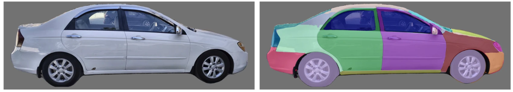
Vehicle Part Segmentation — Side View
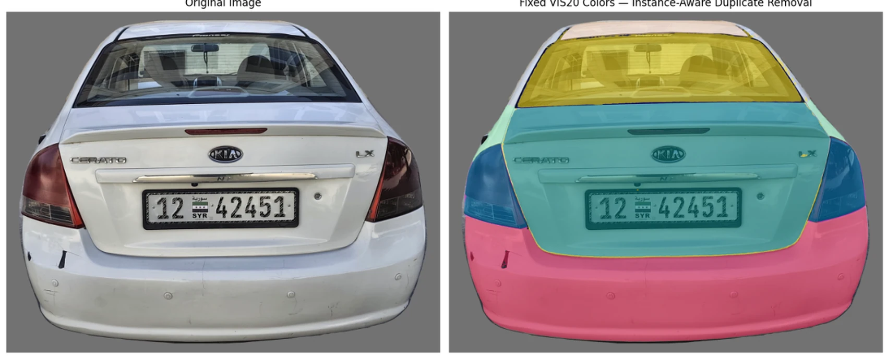
Vehicle Part Segmentation — Rear View
02
Instance-Level Part Extraction
Segmented part instances are isolated into localized regions, enabling part-aware downstream analysis and more precise association between detected damage and vehicle structure.
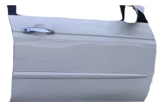
Front DoorYOLO confidence 0.961
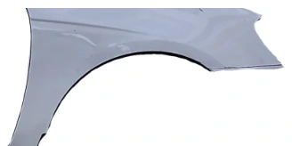
FenderYOLO confidence 0.953
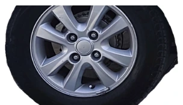
WheelYOLO confidence 0.902
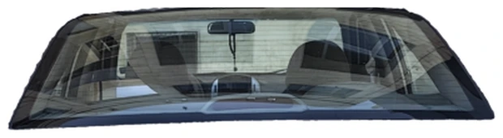
Back GlassYOLO confidence 0.929
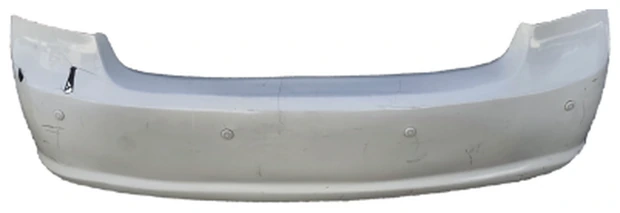
Back BumperYOLO confidence 0.869
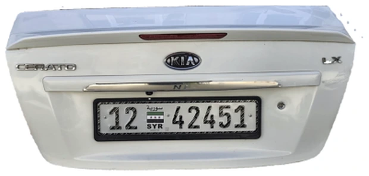
TailgateYOLO confidence 0.696
03
External Damage Analysis
After part-level understanding, the damage pipeline consolidates specialized detection and segmentation evidence. The decision layer separates high-confidence confirmed damage from broader confirmed + review candidates for cases requiring additional inspection.
Side View
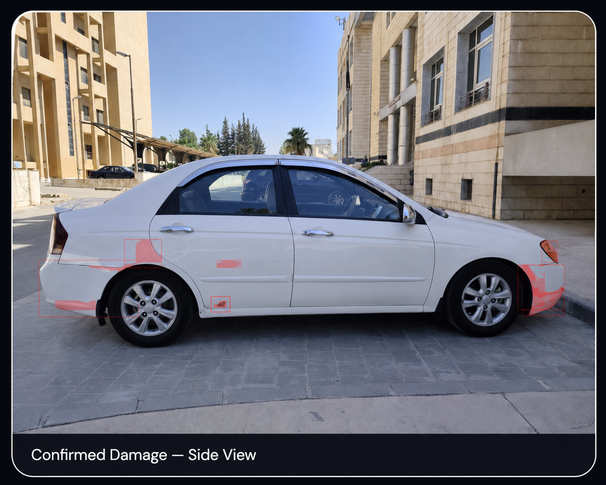
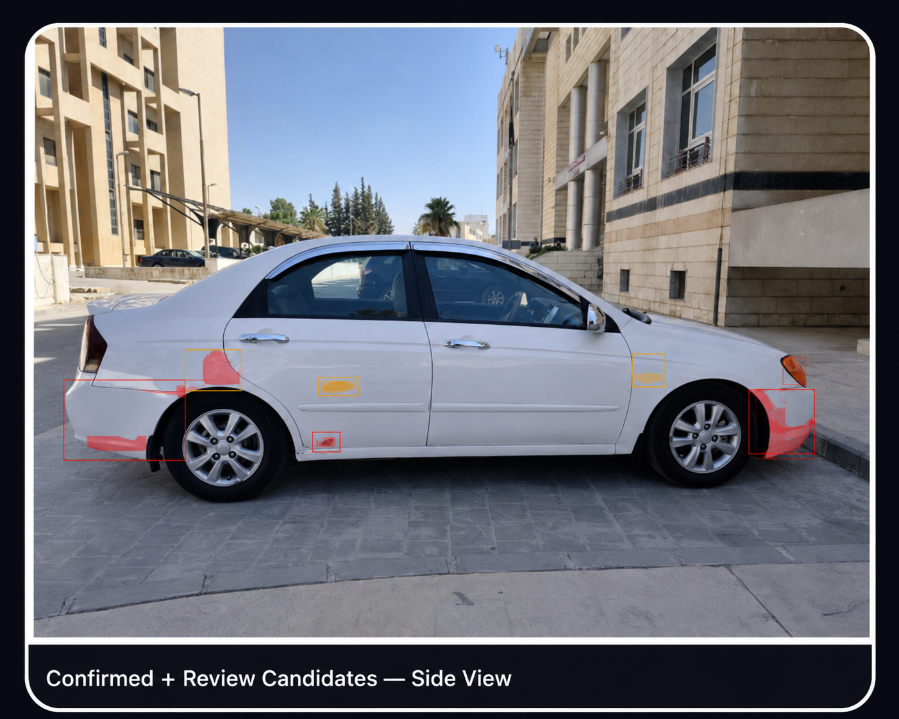
Rear View
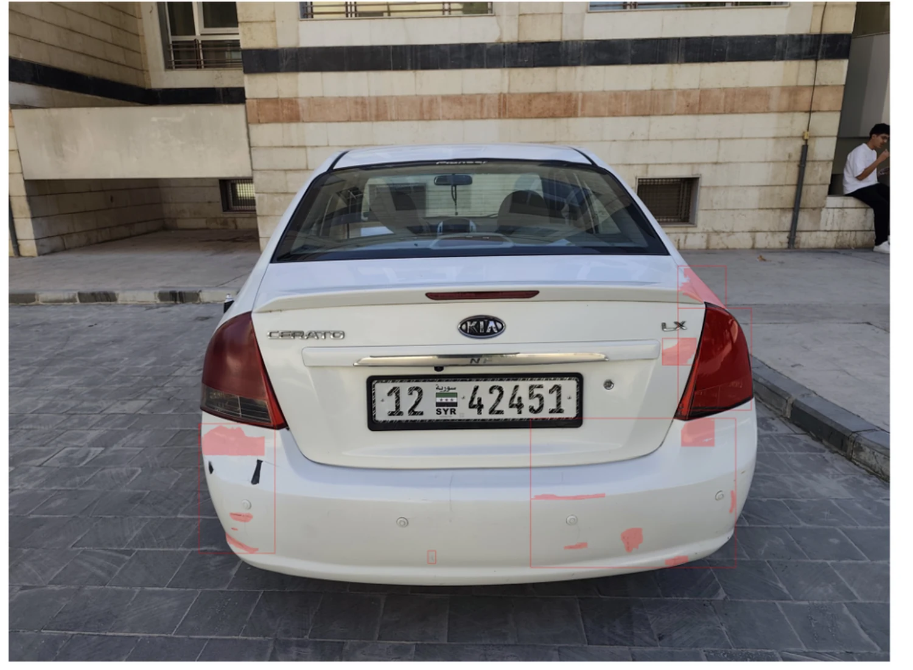
Confirmed Damage — Rear View
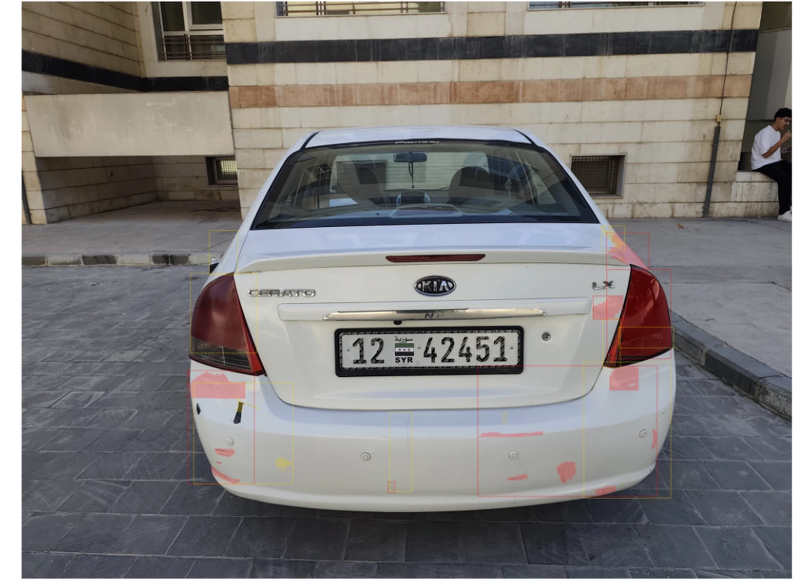
Confirmed + Review Candidates — Rear View
04
Quantitative Results
Part segmentation was benchmarked against Mask R-CNN, GCNet, PANet, CBNet, and HTC, while the external-damage pipeline was evaluated using aggregate F1 and recall. The metrics below summarize the final reported evaluation results.
90.9AP50
73.4AP75
68.5AP50-95
72.0%Damage F1
80.4%Damage Recall
05
Technical Highlights
Core implementation components include a SAV-based segmentation methodology, SAM-assisted mask refinement, confidence-aware selection, hybrid refinement, specialized YOLO detectors, multi-scale processing, Boundary Loss, and ensemble voting.
The pipeline starts from a single facial image and applies face-aware preprocessing to isolate relevant skin regions and reduce background and non-skin interference. From the processed image, complementary RGB and Adaptive-LoG representations are generated to preserve overall facial appearance while emphasizing acne-related lesion patterns. A ResNet50-based classification architecture then learns and combines the resulting visual features for acne severity classification, supported by transfer learning, feature fusion, class-weighted training, and comparative model evaluation.
The workflow begins with a single facial image. MediaPipe-based face-aware preprocessing isolates the relevant skin region, while OpenCV-based enhancement and Adaptive-LoG processing generate lesion-oriented analytical views. The sequence below presents the original input followed by progressively derived processing outputs used for interpretation, analysis, and model development.
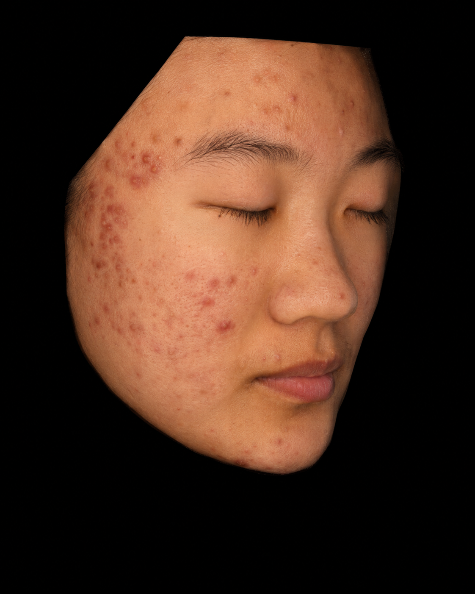
Clinical Input ImageOriginal facial image used as the acne-analysis input.
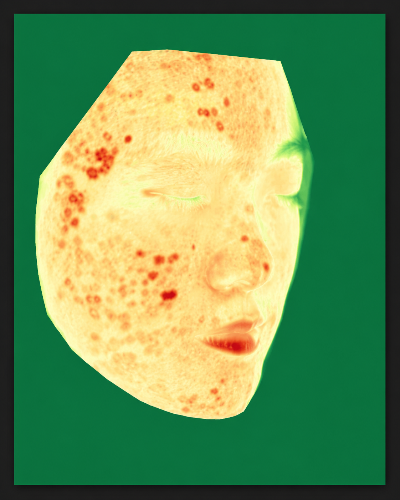
Contrast-Enhanced Analytical ViewProcessed view used to inspect lesion patterns and response consistency.
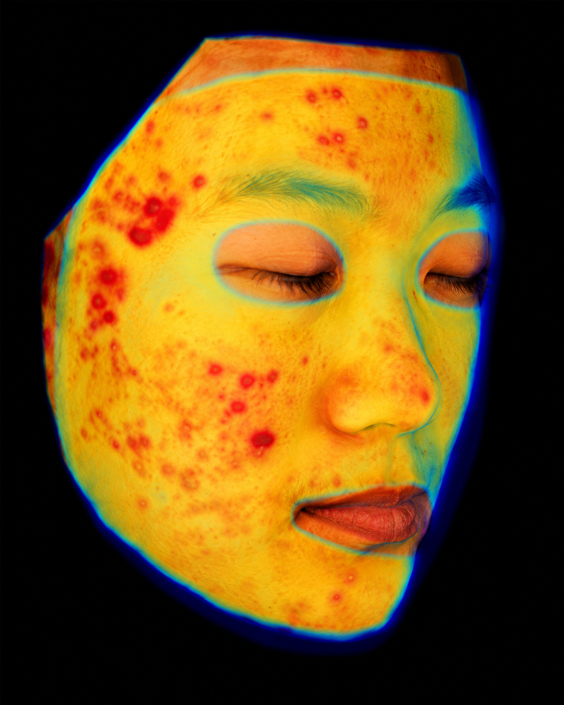
Pseudo-color Response MapAcne-prone regions emphasized through color-mapped response enhancement.
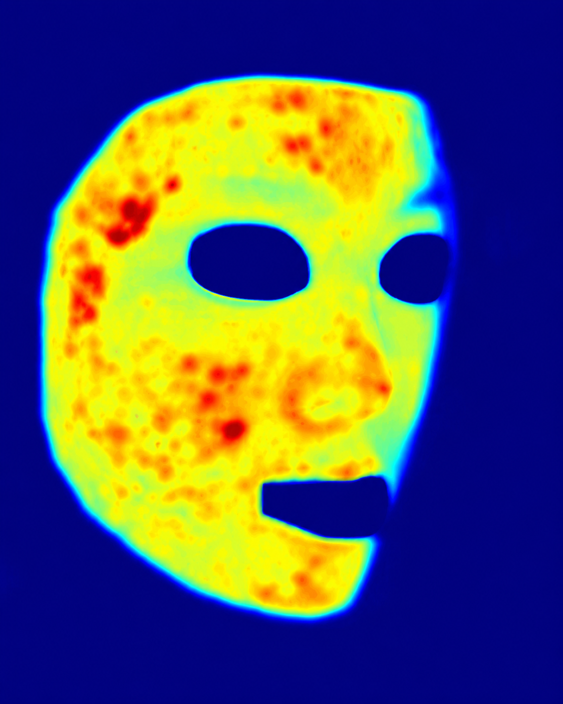
Normalized Heatmap MaskRegion-focused severity distribution after masking and normalization.
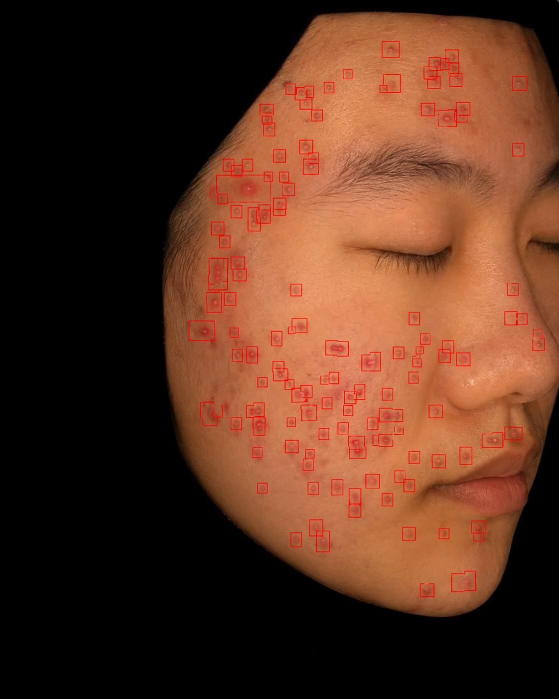
Lesion Candidate LocalizationCandidate lesions visualized as structured evidence for inspection and analysis.
03
Feature Learning & Classification
A ResNet50-based classification architecture learns discriminative acne-severity patterns from the processed image representations generated by the pipeline. ImageNet transfer learning is used for initialization, class-weighted training helps address imbalance across severity categories, and comparative experiments are used to study the effect of preprocessing, representation quality, and architecture design on final performance.